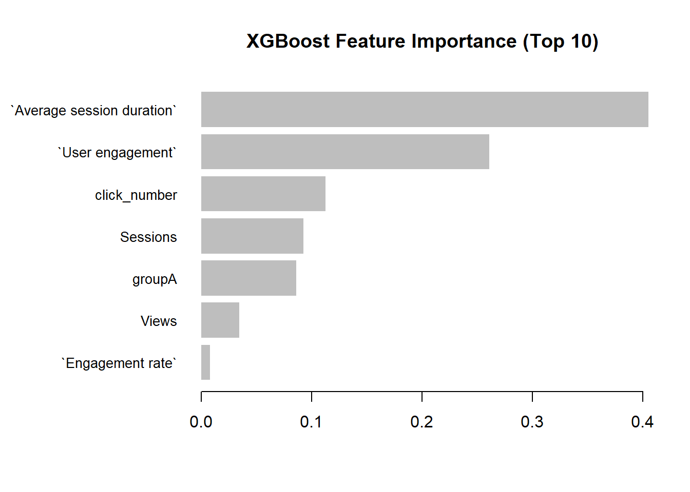
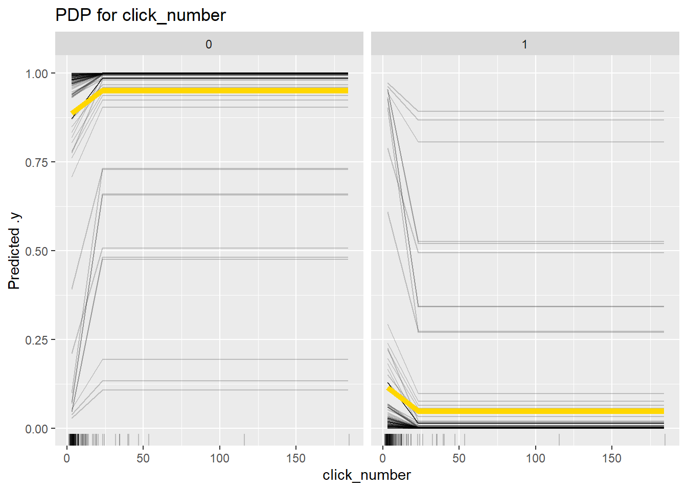

ADSProject3
Project 3: A/B Test
Author: Hanzhong Yang (hy2870) Preach Apintanapong (pa2615) Mengyan Li (ml4779) Raymond Li (jl6787)
Introduction & Research Question
In this project, we are designing and conducting an A/B Test experiment. A/B Test plays an important role in data science, especially for decision-making and user experience optimization. The idea behind A/B Testing is you have two group–A and B, and Group A is the original version and Group B is the modified version. You are comparing how each group behaves. By comparing the outcome for Group A and Group B, you will find out which one is better for you to use.
Research question: Does red color for sales affect people’s choice of buying clothes?
Motivations: In a world filled with countless choices, marketing strategies—such as those used during major sales events like Black Friday—are crafted to influence consumer decisions. It is interesting to see the consistent use of the color red in advertisements across different countries. This widespread practice raises a compelling question: does the color red actually increase urgency in consumer behavior, encouraging quicker or more impulsive purchases?
Hypothesis
Our hypothesis is that the color red has a statistically significant effect on increasing the purchase click rate of the plain black shirt item.
Experimental Design & Methodology
We have two websites–Website A and Website B. On the website, we have three T-shirts–Plain Black Shirt, Code Shirt, and Graphic Shirt. The Plain Black Shirt is $100 with 25% discount. The Code Shirt is $75. The Graphic Shirt is $50. You have $75 in balance to buy the T-shirt. You can buy any T-shirt. But the balance is only sufficent for you to buy one T-shirt. If you already buy one and want to buy another. The website will pop up “Insufficient funds to buy this item”. The Plain Black Shirt has no figures or anything on it. But the sales button is in red and it has a sale for website A, but in color similar to other items for website B to see if red color and sales affect user click rates. The Plain Black Shirt and Code Shirt have same prices of $75, but the code shirt doesn’t use sale strategy and simply state the final price. Graphic Shirt is cheaper at $50 and is used to be a comparison. You can also Rate the Super Graphic Store or leave comments.
Difference between website A and website B: Website A uses red to highlight the sale item—a plain black shirt—while other items, such as the coded shirt and graphic shirt, are shown in mint green. On the other hand, Website B uses mint green for the sale item, matching the color used for the other items in the store.
Cookie-Based Assignment URL for A/B Testing: We created an index.html page on GitHub to serve as a redirect link that randomly sends users—with a 50% probability—to either Website A or Website B. The assigned group is stored in a cookie for 30 days to ensure consistent redirection on future visits.
Data Collection
We sent the two website randomly to two stats students groups and our classmates. In total, 69 students entered Website A and 57 students entered Website B. They clicked on the website and left us valuable data.
We analyzed the data via Google Analytics. In Google Analytics–View user engagement & retention tab, we are able to download the datasets for different events such as different kinds of purchase on three T-shirts. In User Explorer, we are able to download the datasets for individual users behaviors.
Statistical Analysis & Results
To evaluate whether the color of the sale button influenced user engagement in our A/B testing experiment, we conducted a comprehensive statistical analysis comparing Group A (which saw a red-colored sale button) and Group B (which saw a mint green version of the same button). We first conducted a basic visualization of the click-through rate on the purchase button.
From the plot above, we observe that Group A users had a slightly higher average number of clicks (0.203) compared to Group B users (0.175). While this suggests a marginal increase in engagement under the red button condition, the visual difference was small and warranted statistical testing to determine its significance.
To assess the statistical validity of this difference, we performed a Welch two-sample t-test, which does not assume equal variances.
The test yielded a t-statistic of 0.213 and a p-value of 0.8315. The 95% confidence interval for the mean difference ranged from -0.2275 to 0.2824. Since the p-value far exceeds the typical alpha level of 0.05, we fail to reject the null hypothesis and conclude that the observed difference in click counts between the two groups is not statistically significant.
Next, we transformed the click data into a binary indicator—1 if the user clicked at least once, 0 otherwise—to examine group-level differences in click-through likelihood. We then conducted a chi-square test of independence.
The chi-square test returned a statistic close to zero with a p-value of 1.0, indicating no statistically significant association between group assignment and whether a user clicked the sale button. We suspect this may be partially attributed to the low click frequency in both groups.
To account for the small sample size, we conducted a two-sample proportion test. In Group A, 6 out of 69 users clicked the button (≈8.70%), while in Group B, 5 out of 57 users clicked (≈8.77%). The proportion test yielded a p-value of 0.988 and a 95% confidence interval ranging from -0.0998 to 0.0983. These results confirm that there is no statistically significant difference in the proportion of users clicking between the two button color conditions.
Following best practices for small cell counts, we additionally ran a Fisher’s Exact Test.


This test produced a p-value of 1.0 and an odds ratio of approximately 0.99, with a wide confidence interval. The results reaffirmed previous findings and further supported the conclusion that group assignment had no significant influence on click behavior.
To complement our hypothesis tests with a predictive modeling perspective, we trained an XGBoost binary classifier to predict whether a user clicked the black shirt button based on session-level features recorded from Google Analytics. These features included metrics such as total event count, session duration, engagement rate, and group assignment.

From the result, we can tell the Average session duration, User engagement, and the Click Number are the top three most important factors. However, the group variable (groupA) has relatively low importance in the model, which is consistent with our earlier statistical tests (t-test, chi-square, and fisher test) showing no significant difference in click rates between Group A and Group B.
To further interpret our XGBoost model, we generated Partial Dependence Plots (PDP) to investigate one of the most important factors- click_number affects the likelihood of a user clicking the buy button.

To explore interaction effects between click_number and group assignment, we also generated a 2D PDP plot: 
The interaction plot shows that for both groups A and B, the predicted probability of purchase remains consistently low regardless of click_number. This pattern confirms that, while click_number plays a role in model prediction individually, its interaction with the group assignment does not lead to significant changes. The group is neither direly related to the clicking sale button, nor does it related to the click number.
We applied SHAP (SHapley Additive exPlanations) to evaluate the contribution of each feature to the prediction of whether a user clicked the purchase button.
We first generated a local SHAP explanation for a single user:

This specific user had high user engagement and session counts, which contributed positively toward the predicted probability of clicking the button.
Then, we used the Feature Imp method to compute a global SHAP-like feature importance across all users:

From this result, we can tell that User engagement and Average session duration are the most important features globally for the model, and the group difference has no contribution towards the clicks for the sale button.
we visualized the distribution of SHAP values for each feature using violin plots to further explore the feature-level differences between group A and group B. As shown below, certain variables such as click_number, User.engagement, and Engaged.sessions demonstrated noticeable divergence in SHAP contributions between the two groups.

For instance, click_number appears to have a wider SHAP range in group B, which means this feature plays a more substantial role in driving prediction shifts for group B. On the other hand, features like Exits and Entrances exhibit nearly flat SHAP distributions for both groups.
- Interpretation & Conclusion
In conclusion, the group difference—namely the use of a red color for the sales button—does not appear to have a statistically significant impact on users’ tendency to click the purchase button. Instead, features such as average session duration, user engagement, and click number show stronger predictive power in influencing user behavior.
However, slight variations in SHAP values for user engagement and click number between the two groups suggest that the red color might still have a subtle effect on user interaction. This implies that while the red button alone is not a dominant factor, it may contribute marginally to the overall clicking behavior.
- Challenges & Limitations
- Google Analytics data take longer time to update at around 24-48 hours, so we need to wait until we get the data we want.
- The file google-analytics.html was first designed with a tag event_name "purchase_click" for all shirt items, with different event_label 'Plain Black Shirt (Sale)', 'Code Shirt', and 'Graphic Shirt'. However, we later realized that it was difficult to retreived the data for event_label separately, so we change to incorporate all details in event_name which are 'purchase_click_plain_black_shirt_sale,' 'purchase_click_code_shirt' and 'purchase_click_graphic_shirt'.
- The cookie-based assignment did not work properly, as a different version of the website would sometimes appear on subsequent clicks, so we added a small delay (100ms) to ensure the cookie is saved before the page redirects.Contribution:
Hanzhong Yang (hy2870): Coding for Statistical Analysis,Statistical Analysis, Statistical Results, Report drafting
Preach Apintanapong (pa2615): Formal website building, Google Analytics building, Report drafting
Mengyan Li (ml4779): Original website building, User Explorer Building, Report drafting
Raymond Li (jl6787): Some Coding for Statistical Analysis, Report refining.
** Github Link:** https://github.com/My990813/Applied-Data-Science-Project-Three